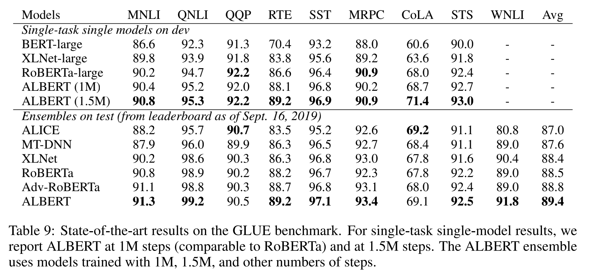

ABSTRACT
模型尺寸的不断变大对训练、和使用都带来了非常大的负担。为了解决这些问题，作者提出了两项参数减少技术，减少了内容的消耗、加速了训练的速度。除此作者使用
SOP任务代替了NSP。ALBERT模型的backbone使用的transformer的encoder层，这部分与BERT保持一致的。具体的参数标记如下：embedding size E, the number of encoder layers as L, and the hidden size as H. we set the feed-forward/filter size to be 4H and the number of attention heads to be H/64。这里BERT里面的参数如下：E:512; L:12;H: 512。
THE ELEMENTS OF ALBERT
ALBERT的三项贡献：
Factorized embedding parameterization
如果 E ≡ H, H的增加会导致embeding matrix的增加，因为其size 是 V* E。但是大多数参数的更新在训练的过程中是非常稀疏的。
这部分使用了因式分解，使得H $\gg$ E。$O(V × H)$ to $O(V × E + E × H)$
Cross-layer parameter sharing
提出了跨层参数共享的方案提高了参数的利用率。
Inter-sentence coherence loss
BERT的两个任务是MLM和NSP、但是相比MLM来讲，NSP任务比较简单，其将主题预测与连续性预测集中在一个任务里面，但是主题预测相比连续性预测较为简单，但是MLM任务对主题预测也覆盖了比较多的内容。作者提出了一个基于句子顺序的损失，该损失的正样本是使用的和BERT相同的样本，负样本将两条句子逆序。The SOP loss uses as positive examples the same technique as BERT (two consecu- tive segments from the same document), and as negative examples the same two consecutive seg- ments but with their order swapped.
ALBERT试验结果:
